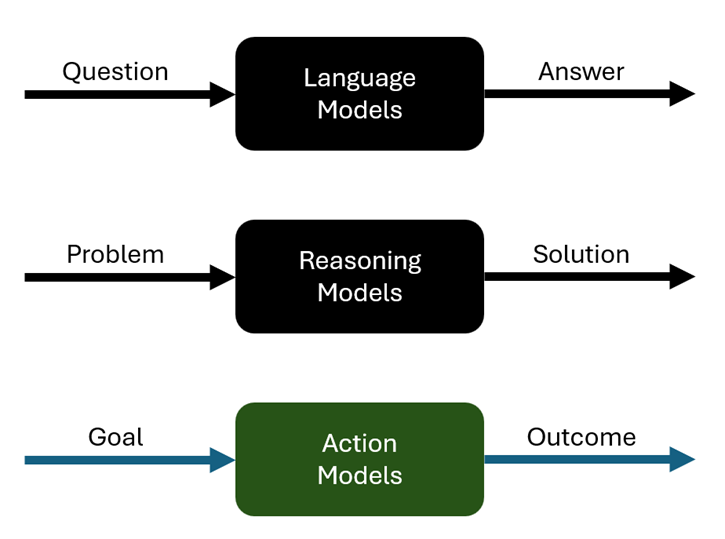

The Evolution of Machine Learning Models: From LLMs to Action Models
Machine learning has seen
transformative changes in recent years, driven by the development of new
categories of models. Large language models (LLMs) have significantly
influenced natural language processing (NLP), followed by the emergence of
reasoning models, which excel at handling more complex tasks. Now, we stand on
the brink of a new frontier: action models. These models promise to extend the
capabilities of their predecessors by interacting with the external world,
taking meaningful actions, and seamlessly integrating into users' lives. In
this article, we explore this progression in depth, examining the capabilities,
challenges, and transformative potential of action models.
The Rise of Large Language Models (LLMs)
LLMs represent a groundbreaking
leap in the field of NLP. Based on transformer architectures, these models are
trained on massive datasets, enabling them to generate text that is coherent,
contextually relevant, and human-like. Their widespread adoption has
revolutionized multiple domains, pushing the boundaries of what artificial
intelligence can achieve in processing and generating human language.
Key Contributions of LLMs:
- Chatbots: LLMs have powered conversational agents
capable of understanding user input and providing helpful, context-aware
responses. From customer support systems to personal virtual assistants,
chatbots have benefited immensely from the contextual depth that LLMs
provide.
- Language Translation: Services like Google
Translate have incorporated LLMs to improve the quality and fluency of
translations. By grasping subtle nuances in language, LLMs ensure more
accurate and context-sensitive outputs.
- Text Generation: From creative writing and content
summarization to drafting emails and legal documents, LLMs have showcased
their ability to assist in a variety of content generation tasks,
democratizing access to high-quality written communication.
However, despite their
transformative capabilities, LLMs have limitations. While adept at
understanding and generating text, they struggle with tasks requiring advanced
reasoning, deep contextual understanding over extended text, or iterative
problem-solving. This gap led to the emergence of reasoning models, the next
step in the machine learning evolution.
Reasoning Models: The Next Logical Step
To address the limitations of
LLMs, reasoning models were developed to handle more complex cognitive tasks.
These models build on the foundational capabilities of LLMs while incorporating
features that enable them to perform tasks requiring deeper thought and
contextual understanding.
Defining Features of Reasoning Models:
- Handling Larger Contexts: Reasoning models excel at
processing and retaining larger amounts of information. This allows them
to operate on tasks requiring deep contextual understanding over multiple
layers of complexity.
- Solving Challenging Problems: These models are
adept at tackling complex math, science, and logical reasoning problems.
By iterating over problems multiple times, they refine their outputs to
ensure accuracy and consistency.
- Allocating Computational Resources: Reasoning
models intelligently allocate additional computational resources to harder
tasks. This enables them to spend more time on challenging problems,
producing well-thought-out solutions that were previously beyond the
capabilities of earlier models.
Examples of Reasoning Models:
OpenAI's o1 models are a prime
example, showcasing improved reasoning capabilities compared to traditional
LLMs. The soon-to-be-released o3 models are expected to set new benchmarks in
problem-solving and advanced reasoning. Despite these advancements, reasoning
models remain largely confined to generating and processing information,
lacking the ability to interact directly with the external world.
Enter Action Models: A Seamless Future
The natural progression from
reasoning models is the development of models that can take actions based on
user-defined goals. Action models promise to be a game-changer by integrating
the generative and reasoning capabilities of previous models with the ability
to perform tasks in the real world. These models represent a shift from
passively processing information to actively achieving user goals.
What Are Action Models?
Action models are an emerging category of machine learning
systems designed to:
- Connect with External Services: Unlike current
models, which operate in isolation, action models will integrate with
external AI-native services. This allows them to perform tasks such as
booking flights, scheduling appointments, or managing finances.
- Take User-Defined Actions: Users will be able to
define high-level goals, and the action model will autonomously plan and
execute steps to achieve those goals. For example, organizing a holiday,
managing budgets, or planning events could be entirely handled by these
systems.
- Iterate and Negotiate: Action models will engage in
continuous feedback loops with the user, refining their actions and
negotiating with external services to deliver optimal outcomes.
- Plan and Orchestrate Steps: Action models will
differ from current agents built on LLMs and reasoning models by
incorporating planning and orchestration of steps as a core capability.
This means they can autonomously manage multi-step tasks, ensuring
seamless execution.
A Practical Example of Action Models in Use
Imagine a user who wants to plan a holiday based on specific
preferences. An action model could:
- Gather Information: Initiate a conversation with
the user to understand their budget, preferred destinations, travel dates,
and desired experiences.
- Research Options: Connect to AI-native travel
platforms to explore available flights, accommodations, and activities
that align with the user's preferences.
- Negotiate and Optimize: Communicate with various
services to secure the best deals and schedules, potentially even bundling
offers for maximum value.
- Keep the User Informed: Provide real-time updates,
suggest alternatives, and finalize bookings only after receiving the
user's approval.
The result is a seamless, hands-free experience,
transforming the way users interact with AI systems and significantly reducing
the manual effort required to achieve complex goals.
Challenges in Building Action Models
While the potential of action models is immense, their
development poses significant challenges that must be addressed to make them a
practical reality.
Key Challenges:
- Integration with External Services: Action models
will need to work with a variety of AI-native services designed for
seamless integration. Scraping data from traditional websites will not
suffice, as robust APIs and infrastructure will be required to support
advanced interactions.
- Security and Privacy: Granting models the ability
to take actions on behalf of users raises concerns about data security and
potential misuse. Safeguards must be implemented to ensure privacy and
prevent unauthorized access.
- Ethical Considerations: Developers must address
ethical questions, such as ensuring transparency in decision-making,
avoiding bias, and preventing unintended consequences resulting from
autonomous actions.
- Technical Complexity: Creating models that reliably
interact with dynamic external systems requires significant advances in
architecture, error-handling, and dynamic adaptability. Ensuring seamless
orchestration of multi-step processes will require unprecedented technical
sophistication.
The Road Ahead
The journey from LLMs to action
models reflects the natural evolution of machine learning, driven by the desire
to create systems that are not only intelligent but also capable of meaningful
interaction with the world. As we look to the future, several steps will be
critical in realizing the potential of action models:
- Develop AI-Native Ecosystems: Building a robust
ecosystem of AI-native services is a prerequisite for action models to
thrive. This includes creating platforms designed for seamless API
integration and real-time data sharing.
- Enhance Model Capabilities: Continuous improvements
in reasoning, contextual understanding, and decision-making will be
necessary to make action models more robust and reliable.
- Address Ethical and Practical Challenges:
Collaboration among researchers, developers, and policymakers will be
vital to ensure the responsible development and deployment of action
models, addressing security, privacy, and transparency concerns.
- Foster User Trust: Ensuring users feel confident
granting action models the authority to perform tasks on their behalf will
be crucial. This will require clear communication, error handling, and
user-friendly interfaces.
Conclusion

Action models represent a bold
and exciting vision for the future of AI. By bridging the gap between
understanding and action, they have the potential to revolutionize industries,
enhance user experiences, and redefine the role of AI in our lives. While challenges
abound, the promise of these models is too great to ignore. As AI continues to
evolve, action models will not only transform the way we interact with
technology but also redefine how technology serves humanity. The question is no
longer whether action models will become a reality, but how soon we can bring
them to life.